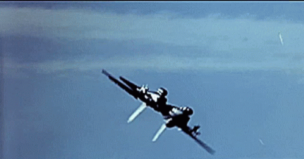

El Grumman F-14 Tomcat es un caza supersónico biplaza con alas de geometría variable pesado, de largo alcance y doble motor, diseñado por Grumman para la Armada de los Estados Unidos. El objetivo primario del Tomcat era la defensa de la flota naval y, entre sus objetivos secundarios, podían contarse la escolta de bombarderos y, más tarde, el ataque contra objetivos en tierra. El Tomcat fue desarrollado especialmente para equipar a la Armada de los Estados Unidos dentro del programa Naval Fighter Experimental (VFX), tras la retirada del proyecto del F-111B. El F-14 fue el primero de una serie de aviones de combate que fueron diseñados incorporando la experiencia del combate aéreo contra los MiG durante la guerra de Vietnam. El primer vuelo de un F-14 fue en diciembre de 19701 y en junio de 1972 se realizaron los primeros apontajes en el portaaviones USS Forrestal (CVA-59).2 Los escuadrones VF-1 y VF-2 fueron los primeros en sustituir sus F-4 Phantom II por los F-1434 en septiembre de 1974, siendo desplegados por primera vez embarcados a bordo del USS Enterprise (CVN-65).5 En 1998, la empresa Lockheed Martin se adjudicó el contrato, valorado en 3,5 millones de dólares, por el cual se instalarían a los F-14 el sistema LANTIRN. Los primeros equipos se instalaron en el escuadrón VF-103, embarcados en el USS Enterprise.6 El 8 de febrero de 2006, los F-14 del escuadrón VF-213 Black Lions fueron los últimos en volar en misión de combate.7 El 22 de septiembre de 2006, fue retirado oficialmente habiendo sido reemplazado por el F/A-18E/F Super Hornet.8 